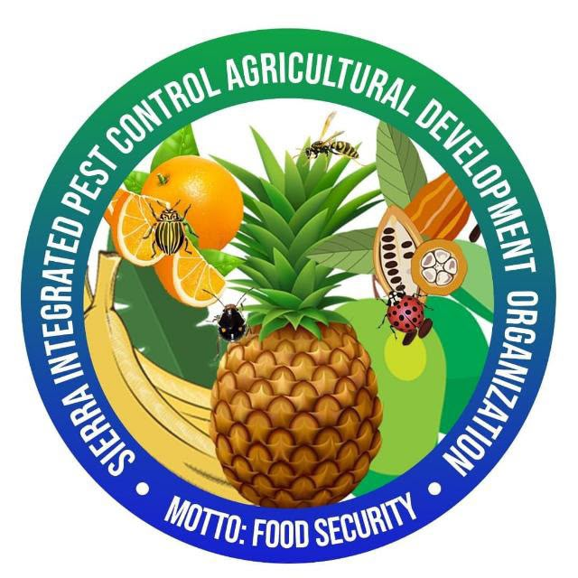

Agricultural production
SADO reports cultivating more than 50 acres in Falaba District, producing crops including pineapple, mango and banana.

SADO-SLFalaba District, Sierra Leone
Sierra Integrated Pest Control Agricultural Development Organization (SADO-SL) works to support agricultural production, pest-control management and farmers' capacity in Sierra Leone.
SADO's work brings together local agricultural production, pest-control management and development solutions. The marketplace page is the place to view current product and service information and contact the organization.
SADO reports cultivating more than 50 acres in Falaba District, producing crops including pineapple, mango and banana.
The organization focuses on pest-control management systems and related agricultural services.
SADO's mission includes helping farmers build capacity and increase agricultural productivity.
Founded on January 15, 2017, by Mohamed Lamin Jabbie, Sierra Integrated Pest Control Agricultural Development Organization is based in Falaba District. Its stated vision is to contribute to food sufficiency and development in Sierra Leone through agriculture, pest control and support for farmers.
Learn more about the organization's story, vision and mission, or visit the SADO-SL marketplace.